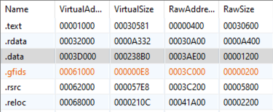
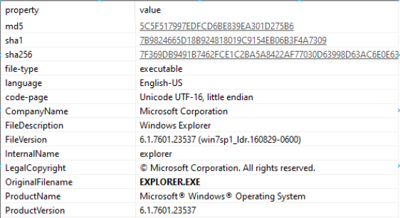
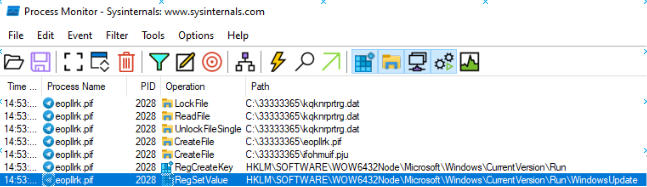
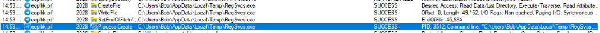
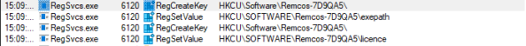
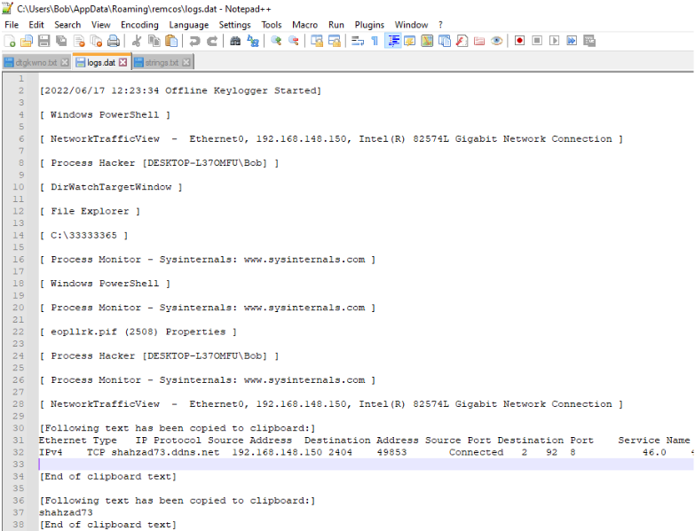

PEstudio says the file offset to the ovleray is at offset 0x00043C00, so extract it with HxD and save to disk.


27th June 2022
This is an analysis of lab05.exe from a Malware Analysis CTF run by @Bowflexin91 and @HBRH_314:
https://cet.ctfd.io/cet.ctfd.io/readme
md5: a7983d32e7bd7228197e6dcf1c71ed66
sha1: 52f930dcce70cd3c6c4fcab5b9089d892fb20239
sha256: c8a4462c6b8f5d8728d5374adc98def5a5c38dd97d70a1c3859c876bfbe3fbd0
lab05.exe is a self-extracting RAR archive that contains a compiled AutoIt script which is a loader for Remcos malware. lab05.exe extracts the AutoIt script, the AutoIt script unpacks and maps Remcos malware (here: https://breakingsecurity.net/remcos/) into RegSvcs.exe, and Remcos performs keylogging functionality and reports back to a C2.
Data sent back to C2 at:shahzad73.casacam.net / 192.210.78.136.
If executing, eopllrk.pif will be running and have spawned a RegSvcs.exe subprocess.
RAR archive is extracted to C:\33333365
Keylogged data is stored at C:\Users\Bob\AppData\Roaming\remcos\logs.dat
Remcos installation is written to:HKCU\Software\Remcos-7D9QA5 with keys exepath and license.
Persistence is installed as a Run key:
HKCU\SOFTWARE\Microsoft\Windows\CurrentVersion\Run
WindowsUpdate: c:\33333365\eopllrk.pif c:\33333365\ifohmuif.pju
filetype: PE32
arch: I386
mode: 32
endianess: LE
type: GUI
sfx: WinRAR(-)[-]
compiler: EP:Microsoft Visual C/C++(2013-2017)[EXE32]
compiler: Microsoft Visual C/C++(2015 v.14.0)[-]
linker: Microsoft Linker(14.0, Visual Studio 2015 14.0*)[GUI32]
overlay: RAR archive(-)[-]
archive: RAR(5)[-]
TimeDateStamp 5E7C7DC7 Thu, 26 Mar 2020 10:02:47 UTC (823 days, 0.07 hours ago)
λ trid lab05.exe
...
Collecting data from file: lab05.exe
91.0% (.EXE) WinRAR Self Extracting archive (4.x-5.x) (265042/9/39)
The initial PE is a 32bit self-extracting RAR archive.
The compile time suggests this isn't a new file (2020).

.data looks compressed. A RawSize of 0x1200 is significantly smaller than a VirtualSize of 0x238b0. This fits with the PE being a compressed RAR archive.
# PDB
D:\Projects\WinRAR\sfx\build\sfxrar32\Release\sfxrar.pdb
# Run key for persistence?
Software\Microsoft\Windows\CurrentVersion
# Lots of weird filename strings:
otnhrcj.txt
jwcksci.xls
dtgkwno.txt
nmsuehlk.pdf
ifohmuif.pju
eopllrk.pif
jhdkjdgehr.pdf
haucij.jpg
kqknrprtrg.dat
Setup=eopllrk.pif ifohmuif.pju
inxsqt.pdf
pestudio identifies there's an overlay.
overlay (RAR)
md5,A6E55CDA2AA76305F0CC2A4B0C972012
sha1,3AE6AC7FA0D4F4B9F3677170FBCE7003908A48C6
sha256,EAEB71EB354CED3DC8E6B7CF0C8CB3039CCE2050C7EFD5DD2F4D553CFB5825B2
entropy,7.998
file-offset,0x00043C00
size,643278 (bytes)
This overlay is the rar archive containing the files to extract.
PEstudio says the file offset to the ovleray is at offset 0x00043C00, so extract it with HxD and save to disk.
Unrar it to extract the rar contents.
These filenames are the strings we saw earlier. There's a lot of junk here, but:
eopllrk.pif is a PE file ifohmuif.pju looks to be encrypted and/or compressed data. kqknrptrg.dat is potentially a key Now we're looking at the PE file extracted from the rar overlay above. Originally it's named eopllrk.pif. Rename it from a shortcut to .exe so that it's easier to work with:λ mv eopllrk.pif eopllrk.exe
md5: 3A662807345100A9670E710C8616D1B5
sha1: 0F3B3F0F0A877D9F1EE410AB0A52BCBE0B64356D
sha256: 78D69D13A0B072D4F89AD34F4EF07D84917585A5B1D921FB011D8F650FFB88D4
λ diec eopllrk.exe
filetype: PE32
arch: I386
mode: 32
endianess: LE
type: GUI
compiler: Microsoft Visual C/C++(2010)[libcmt]
linker: Microsoft Linker(10.0)[GUI32,signed]
TimeDateStamp 4F25BAEC Sun, 29 Jan 2012 21:32:28 UTC (3802 days, 13.41 hours ago)
.data looks to be compressed.
A RawSize of 0x6800 is significantly smaller than a VirtualSize of 0x1A758.
There's lot sof internet capabilities in this PE's imports:
wsock32.dll
8000000D 8000000D N/A N/A 0000000D (listen)
80000073 80000073 N/A N/A 00000073 (WSAStartup)
80000002 80000002 N/A N/A 00000002 (bind)
80000003 80000003 N/A N/A 00000003 (closesocket)
80000004 80000004 N/A N/A 00000004 (connect)
80000017 80000017 N/A N/A 00000017 (socket)
80000013 80000013 N/A N/A 00000013 (send)
80000001 80000001 N/A N/A 00000001 (accept)
80000010 80000010 N/A N/A 00000010 (recv)
wininet.dll
0008E08A 0008E08A 009F InternetReadFile
0008DFB4 0008DFB4 009A InternetOpenW
0008E018 0008E018 0072 InternetConnectW
0008E02C 0008E02C 0058 HttpOpenRequestW
0008E076 0008E076 0099 InternetOpenUrlW
psapi.dll
0008E0C8 0008E0C8 0006 EnumProcesses
`
The original OriginalFilename is set to EXPLORER.EXE, potentially tyring to be covert and appear as a legitimate binary.

A few strings suggest this is an AutoIt script:
AutoIt:
00083768 /AutoIt3OutputDebug
00083790 /AutoIt3ExecuteLine
000837B8 /AutoIt3ExecuteScript
And these look like keylogger strings:
000F294C UNICODE EXPLORER.EXE
0008A2BB UNICODE KEYPRESSED
00087F37 UNICODE KEYSET
000844C0 ALTUP
000844CC ALTDOWN
000844DC CTRLUP
000844EC CTRLDOWN
00084500 MOUSE_XBUTTON2
00084520 MOUSE_XBUTTON1
00084540 MOUSE_MBUTTON
0008455C MOUSE_RBUTTON
00084578 MOUSE_LBUTTON
00084594 LAUNCH_APP2
000845AC LAUNCH_APP1
000845C4 LAUNCH_MEDIA
000845E0 LAUNCH_MAIL
000845F8 MEDIA_PLAY_PAUSE
0008461C MEDIA_STOP
00084634 MEDIA_PREV
0008464C MEDIA_NEXT
00084664 VOLUME_UP
00084678 VOLUME_DOWN
00084690 VOLUME_MUTE
000846A8 BROWSER_HOME
000846C4 BROWSER_FAVORTIES
000846E8 BROWSER_SEARCH
00084708 BROWSER_STOP
00084724 BROWSER_REFRESH
00084744 BROWSER_FORWARD
00084764 BROWSER_BACK
00084780 NUMPADENTER
00084798 SLEEP
000847A4 RSHIFT
000847B4 LSHIFT
000847C4 RALT
000847D0 LALT
000847DC RCTRL
000847E8 LCTRL
000847F4 APPSKEY
00084804 NUMPADDIV
00084818 NUMPADDOT
0008482C NUMPADSUB
00084840 NUMPADADD
00084854 NUMPADMULT
0008486C NUMPAD9
0008487C NUMPAD8
0008488C NUMPAD7
0008489C NUMPAD6
000848AC NUMPAD5
000848BC NUMPAD4
000848CC NUMPAD3
000848DC NUMPAD2
000848EC NUMPAD1
000848FC NUMPAD0
0008490C CAPSLOCK
00084920 PAUSE
0008492C BREAK
00084938 NUMLOCK
00084948 SCROLLLOCK
00084960 RWIN
0008496C LWIN
00084978 PRINTSCREEN
000849A0 SPACE
000849AC RIGHT
000849B8 PGUP
000849C4 PGDN
000849D0 LEFT
000849DC INSERT
000849F4 HOME
00084A60 ESCAPE
00084A78 ENTER
00084A8C DOWN
00084A98 DELETE
00084AB8 BACKSPACE
After running the initial .exe (lab05.exe) we can see eopllrk.pif and RegSvcs.exe executing.eopllrk.pif spawns RegSvcs.exe, and RegSvcs.exe contains the bulk of the logic and is connected to a listening server.


In Wireshark you'll see a for shahzad73.casacam.net, which is what 192.210.78.136 resolves to.
lab05.exe extracts the contents of the .rar archive to C:\33333365.
And via procmon we can see that lab05.exe spawns eopllrk.pif with the cmdline: "C:\33333365\eopllrk.pif" ifohmuif.pju.
eopllrik.pif performs a bunch of reads on ifohmuif.pju and then drops an modified version of kqknrprtrg.dat to C:\Users\Bob\temp\kqknrprtrg.dat


Based on static analysis this looks like the Run key persistence that gets installed.
eopllrik.pif installs persistence:


Lastly it copies RegSvcs.exe to a local temp folder: AppData\Local\Temp\RegSvcs.exe, spawns it, and injects into it.

RegSvcs.exe appears to execute Remcos, a remote control software by BreakingSecurity.net. It's a malware RAT that the company is attempting to brand as legitimate software.
https://breakingsecurity.net/remcos/

It writes two keys to the registry: "exexpath" and "license".

And it writes all of its keylogged inputs to C:\Users\Bob\AppData\Roaming\remcos\logs.dat.

If you examine the memory of RegSvcs.exe you'll find a RWX section.
This is the manually mapped remcos malware which you can dump for further analysis.